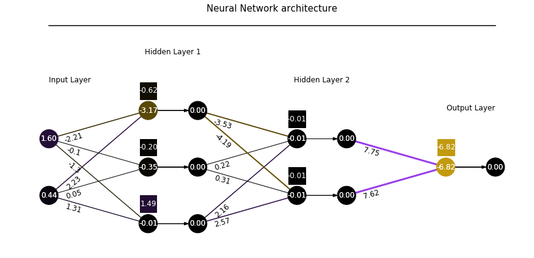
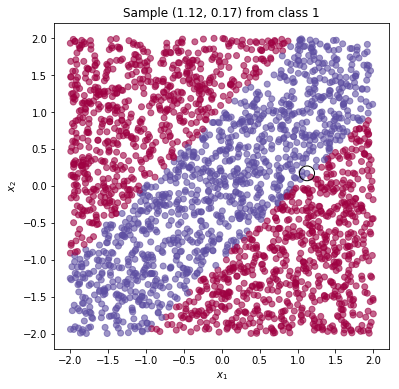
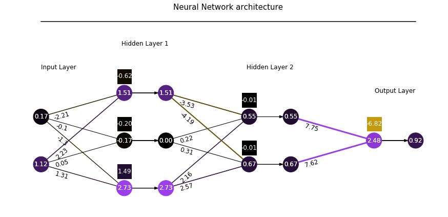
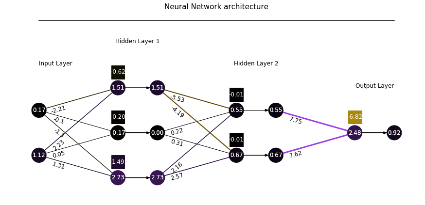
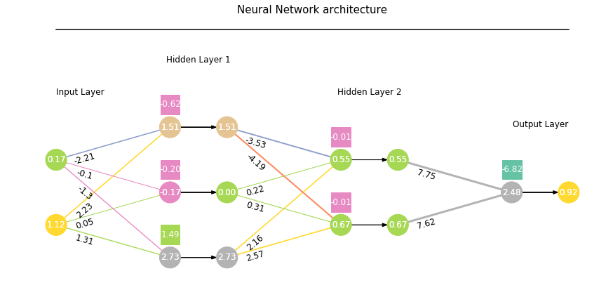

1. Introduction
Welcome back to the FCNN series!
In this new post, we are going to develop a Python class to visualize what happens inside a feed-forward neural network, which has been trained on toy examples with Tensorflow with the previously-developed Python class, trainFCNN().
The Python class, visFCNN(), takes as input a dictionary containing all the information required to visualize the network flow, namely the values of the network parameters and main nodes (inputs, linear outputs and activation outputs).
This flow corresponds to a single sample extracted from the dataset.
This Python class also needs some initial settings (such as geometric parameters of the chart) and then it starts to draw a neuron and a bias term, a line that represents a linear layer weight, to assign the colours to any object, to draw the input layer, each hidden layer and the output layer.
In the end, we play a bit with the class to visualize the same neural network with different settings.
The source code can be found in my Github repo.
2. Retrieve the data from the trained network
We get the data from the network that we trained on the classification problem, stripe, in the previous post and store it into the fcnn variable.
Parameters and variables are stored in nn_prms and nn_vars, respectively.
We define the structure fcnn, a Python dictionary, containing all the information required to visualize the network flow.
We treat the input as the output of a fictitious previous activation layer.
The set of activation layers, $a^{(kk)}$, is retrieved from tnn.nn_vars[1::2], while the set of dense layers, $z^{(kk)}$, is retrieved from tnn.nn_vars[::2].
In a similar fashion, we extract weights and biases from tnn.nn_prms.
fcnn = {'activations': [tnn.XX] + tnn.nn_vars[1::2], 'linNeurons':tnn.nn_vars[::2],
'weights': tnn.nn_prms[::2], 'biases': tnn.nn_prms[1::2],}
3. The visualization class output
Let’s have a look at what we are going to build.
Here we create an instance of the class and call the visualize method with the following attributes:
- the
fcnndictionary containing the required data, - the sample index,
- a tuple for the figure size.
The input coordinates are (0.44, 1.6) and the outcome is 0, the probability of the input to belonging to class 1 (blue).
Indeed, the sampled point (idx=10) belongs to the red class.
vnn = visFCNN()
vnn.visualize(fcnn, 10, (15, 8))

4. Building the visualization class visFCNN
4.1 Initialization
This section aims at initializing the class with the network data and the geometric parameters. We describe how to create the visualization class as a sequence of function-definition steps, rather than give the entire code into a single block that doesn’t help very much.
class visFCNN(object):
pass
We start by setting the geometric parameters that define the network chart layout. Every geometric parameter has been explained in the post intro.
def init_class(self):
#
self.hor_mrg = 7
self.hor_mrgLayer = self.hor_mrg/2
self.layerDist = self.hor_mrg+self.hor_mrgLayer
self.vert_mrg = 4
self.neuron_radius = 0.65
self.bias_size = 1.2
self.colorPos = np.r_[155, 62, 235]/255
self.colorNeg = np.r_[193, 154, 13]/255
visFCNN.__init__ = classmethod(init_class)
In this series, we focus only on visualizing the forward flow for a single sample. A different series will follow soon to visualize the flow of a batch of samples simultaneously.
That’s why we extract the row indexed by sample from each variable in activations and linNeurons.
For better visualization of the parameters and variables’ intensity, we extract the maximum value ever for each of those objects, so that data (and therefore colours) can be normalized.
def dataRetrieval(self, fcnn, sample):
#
self.activations = [act[sample, :] for act in fcnn['activations']]
self.linNeurons = [linNeur[sample, :] for linNeur in fcnn['linNeurons']]
self.layers = zip(self.linNeurons, self.activations[1:], fcnn['weights'], fcnn['biases'])
self.Nlayers = len(self.activations)-1 # no input layer
self.Nneuron_max = max(aa.shape[0] for aa in self.activations)
self.maxVal = lambda xxs: max(np.max(np.abs(xx)) for xx in xxs)
self.bottomMargin = lambda Nneurons: self.vert_mrg * (self.Nneuron_max-Nneurons)/2
self.w_max = self.maxVal(fcnn['weights'])
self.b_max = self.maxVal(fcnn['biases'])
self.prm_max = max(self.w_max, self.b_max)
self.a_max = self.maxVal(self.activations)
self.z_max = self.maxVal(self.linNeurons)
self.var_max = max(self.a_max, self.z_max)
self.glb_max = max(self.prm_max, self.var_max)
self._max = self.maxVal(fcnn['weights']+fcnn['biases']+self.activations+self.linNeurons)
self.inputs = self.activations[0]
visFCNN.dataRetrieval = classmethod(dataRetrieval)
4.2 Draw a neuron
We draw a circle for a neuron, i.e., any variable in the network, namely inputs x, affine transformation outputs z and activation outputs a.
The biases are represented as a rectangle.
Matplotlib comes with built-in methods to create such geometric shapes.
The rectangle plt.Rectangle needs left-bottom-most coordinates, width and height as attributes.
In a similar way, the circle plt.Circle needs the centre coordinates and the radius as attributes.
The main code calculates the coordinates of the object central point, xx and yy.
In the circle case, those are its centre, while in the rectangle case they need to be shifted left-downward by half of the bias square size bias_size/2.
Colour can be specified as optional.
Its intensity is defined within the patchColor function we will soon analyze.
The geometric object neuron is then added to the current axis gca() with add_patch.
Some text is added at the centre of the object. Colour is set to white.
def drawNeuron(self, xx, yy, intensity, maxVal, kind='z_a'):
neurCol = self.patchColor(intensity/maxVal)
if kind == 'b':
neuron = plt.Rectangle((xx-self.bias_size/2, yy-self.bias_size/2), self.bias_size, self.bias_size, color=neurCol)
else: # z/a
neuron = plt.Circle((xx, yy), radius=self.neuron_radius, color=neurCol, zorder=3)
plt.text(xx, yy, '{:.2f}'.format(intensity), fontsize = 12, va='center', ha='center', color='w')
plt.gca().add_patch(neuron)
plt.text(xx, yy, '{:.2f}'.format(intensity), fontsize = 12, va='center', ha='center', color='w')
visFCNN.drawNeuron = classmethod(drawNeuron)
4.3 Draw weights’ lines
We draw a line line for each weight connecting a neuron of one layer to a neuron of the next layer.
The first argument to the plt.Line2D() is the list of two x-coordinates, while the second one contains the y-coordinates.
Colour is defined as a function of weight intensity with the patchColor method, as well as the line width.
The line width is 1 for a 0 weight and it increases as a square function of the intensity.
The geometric line line is then added to the current axis gca() with add_line.
Some text is added at the centre of the object to report the corresponding weight value. Colour is set to white. The challenge here is to orientate the text along the weight line direction, for the sake of readability.
We get the angle (in degrees) of the weight line from the connected neurons’ coordinates by means of a basic trigonometry rule:
$$ \alpha = \arctan\big(\frac{\Delta y}{\Delta x}\big)\cdot\frac{180}{\pi} $$
where $\Delta y = y_L - y_R$ is the vertical distance between the LHS and RHS neurons.
You easily guess what $\Delta x = x_L - x_R$ might be.
Its value is fed to the rotation attribute.
The text location is shifted by 25% of the line length along its direction, from the left-side neuron.
def drawLine(self, pL, pR, intensity, maxVal):
neurCol = self.patchColor(intensity/maxVal)
line = plt.Line2D(pL, pR, color=neurCol, linewidth=1+np.abs(intensity/maxVal)*2)
plt.gca().add_line(line)
scaling = .25
dx, dy = np.diff(pL), np.diff(pR)
alpha = np.arctan(dy/dx)*180/np.pi
xText = pL[0]+dx*scaling
yText = pR[0]+dy*scaling
plt.text(xText[0], yText[0], str(round(intensity, 2)), rotation=alpha[0], fontsize = 12, va='top', ha='center')
visFCNN.drawLine = classmethod(drawLine)
4.4 Patch and line colours
We have two options to assign colours to each component:
2cols, which uses two colours, one for positive (colorPos) and the other for negative (colorNeg) values. The colour intensity is related to the component absolute value stored inintensity.paletteName, which is one of the palette names that can be found in the main docu.
The function is quite compact.
def patchColor(self, intensity):
if self.palette == '2cols':
neurCol = self.colorPos if intensity>=0 else self.colorNeg
neurCol = tuple(np.abs(intensity)*neurCol)
else:
smap = cm.ScalarMappable(norm=mColNorm(vmin=-1, vmax=1), cmap=cm.get_cmap(self.palette))
neurCol = tuple(smap.to_rgba([intensity]).reshape(-1)[:3])
return neurCol
visFCNN.patchColor = classmethod(patchColor)
However, we illustrate the intermediate results of the palette option.
The example looks for the colour-map inferno.
In the code, the map name is given by the .palette attribute.
The get_cmap method returns a function that we call with the intensity input.
The below examples return two 4-element tuples for -.5 and -1.
cm.get_cmap('inferno')(-.5), cm.get_cmap('inferno')(-1)
((0.001462, 0.000466, 0.013866, 1.0), (0.001462, 0.000466, 0.013866, 1.0))
It is possible to normalize the colour scale with the norm attribute in the ScalarMappable method.
In this case, we need to use the to_rgba method that expects a list.
We reshape the output to a 1D array and take the first three elements only (the transparency factor alpha is discarded).
smap = cm.ScalarMappable(norm=mColNorm(vmin=-1, vmax=1), cmap=cm.get_cmap('inferno'))
rgbs = smap.to_rgba([.5]).reshape(-1)[:3]
tuple(rgbs)
(0.978422, 0.557937, 0.034931)
4.5 Input layer
We draw a neuron for each input.
The x-coordinate does not change, but the y-coordinate does. Each next input is upshifted by vert_mrg.
The first neuron starts from x=0 and y set to the bottomMargin.
See the introduction section that helps visualize it with some schemes.
On top of this series of input neurons, we add the layer title.
def inputLayer(self,):
xx = kk = 0
for jj, a0 in enumerate(self.inputs):
self.y_bottom = self.bottomMargin(len(self.inputs))
yy = self.y_bottom + jj*self.vert_mrg
colNorm = self.colNormFun(self.a_max, self.var_max)
self.drawNeuron(xx, yy, a0, colNorm)
plt.text(xx, yy+self.vert_mrg, 'Input Layer', fontsize = 12)
self.y_bottom_prev = self.y_bottom
visFCNN.inputLayer = classmethod(inputLayer)
4.6 Draw the weights
At layer kk we draw as many lines as the product of the number of neurons on each side, i.e., Din is the input dimension, the number of neurons and Dout is the output dimension, extracted from the weights shape.
The horizontal offset is given by hor_mrg, while the vertical one by vert_mrg.
The initial vertical offset changes from one layer (y_bottom_prev) to the next (y_bottom) according to the number of layer neurons.
def drawWeights(self, linNeurons, weights, kk):
self.y_bottom = self.bottomMargin(len(linNeurons)) # activations
xx = kk*self.layerDist + self.hor_mrg
Din, Dout = weights.shape
xL, xR = xx-self.hor_mrg, xx
for kL in range(Din):
for kR in range(Dout):
yL, yR = self.y_bottom_prev + (kL)*self.vert_mrg, self.y_bottom + (kR)*self.vert_mrg
wLR = weights[kL, kR]
colNorm = self.colNormFun(self.w_max, self.prm_max)
self.drawLine((xL, xR), (yL, yR), wLR, colNorm)
self.xx = xx
visFCNN.drawWeights = classmethod(drawWeights)
4.7 Draw linear outputs z and biases
At layer kk we draw a circle for each linear output z contained in linNeurons and a rectangle (kind='b') for each bias term in biases.
We use the arrow method to represent the activation function by connecting the linear output $z_j$ to the activation output $a_j$.
On top of the layer, we add its title, which is either Output Layer for the last layer or Hidden Layer otherwise.
def drawBiasesLinOutputs(self, linNeurons, biases, kk):
#
for jj, (zz, bb) in enumerate(zip(linNeurons, biases)):
yy = self.y_bottom + jj*self.vert_mrg
colNorm = self.colNormFun(self.z_max, self.var_max)
self.drawNeuron(self.xx, yy, zz, colNorm)
colNorm = self.colNormFun(self.b_max, self.prm_max)
self.drawNeuron(self.xx, yy+self.vert_mrg*.35, bb, colNorm, kind='b')
plt.arrow(self.xx, yy, self.hor_mrgLayer-self.neuron_radius, 0,\
length_includes_head=True, head_width=0.2, fc='k', ec='k')
layerTitle = 'Hidden Layer ' + str(kk+1) if kk<self.Nlayers-1 else 'Output Layer'
plt.text(self.xx+self.hor_mrgLayer/2, yy+self.vert_mrg, layerTitle, fontsize = 12, ha='center')
visFCNN.drawBiasesLinOutputs = classmethod(drawBiasesLinOutputs)
4.8 Draw activation outputs a
At layer kk we draw a circle for each activation output a contained in activations.
def drawActivation(self, activations):
self.xx += self.hor_mrgLayer
for jj, aa in enumerate(activations):
yy = self.y_bottom + jj*self.vert_mrg
colNorm = self.colNormFun(self.a_max, self.var_max)
self.drawNeuron(self.xx, yy, aa, colNorm)
self.y_bottom_prev = self.y_bottom
visFCNN.drawActivation = classmethod(drawActivation)
4.10 Visualize the whole network
The main function, visualize, groups the whole process, from retrieving a sample of the dataset with dataRetrieval() to creating the input, hidden and output layers, to defining the colour normalization function colNormFun.
We have three options:
- We normalize wrt the maximum value of that component. For instance, if it is a linear output
z, we usez_maxacross all the layers, if it is an activation outputa, we usea_maxacross all the layers, if it is a biasb, we useb_max. - We normalize wrt the maximum value of that component master. We thus use the maximum variable value
var_maxfor bothzandaand the maximum parameter valueprm_maxfor bothwandb. - We normalize wrt the maximum value of the whole network,
glb_max.
See the __init__ method at the beginning for the corresponding code.
The title of the network is created at the end.
To prevent the library to squeeze our geometric shapes by using different scales for the two axes, we need to set equal scaling (i.e., make circles circular) by changing the dimensions of the plot box, as plt.axis('scaled').
We also get rid of the axis grids and ticks with plt.axis('off') to improve readability.
def visualize(self, fcnn, sample=0, figsize=(12, 8), palette='2cols', colNorm='comp'):
self.palette = palette
self.colNorm = colNorm
self.dataRetrieval(fcnn, sample)
self.colNormFun = lambda mv1, mv2: mv1 if self.colNorm == 'comp' else mv2 if self.colNorm == 'varprm' else self.glb_max
plt.figure(figsize=figsize)
# input layer
self.inputLayer()
# hidden and output layers
for kk, layer in enumerate(self.layers):
linNeurons, activations, weights, biases = layer
self.drawWeights(linNeurons, weights, kk)
self.drawBiasesLinOutputs(linNeurons, biases, kk)
self.drawActivation(activations)
# title and axis ratio
ttlX, ttlY = [0, (kk+1)*(self.layerDist)], [(self.Nneuron_max+.5)*self.vert_mrg]
plt.gca().add_line(plt.Line2D(ttlX, ttlY, color='k'))
plt.title('Neural Network architecture', fontsize=15)
plt.axis('scaled')
plt.axis('off')
plt.show()
visFCNN.visualize = classmethod(visualize)
5. Visualizing a single sample through FCNN
We create an instance, vnn, and inspect the network for a point on the boundary.
It correctly predicts the class (1, blue) with high probability.
However, it is probably too high for a point on the boundary.
It is indeed not surprising at all, due to the simple structure of the problem at hand and since no regularization has been introduced.
tnn.plotPoints(idx=2000)

vnn = visFCNN()
vnn.visualize(fcnn, 2000, (15, 8), palette='2cols', colNorm='comp')

The following three cases want to represent the same network flow (the input sample does not change) with different colour mapping and normalization criteria.
vnn.visualize(fcnn, 2000, (15, 8), palette='2cols', colNorm='glb')

vnn.visualize(fcnn, 2000, (15, 8), palette='Set2', colNorm='comp')

vnn.visualize(fcnn, 2000, (15, 8), palette='Set2', colNorm='varprm')